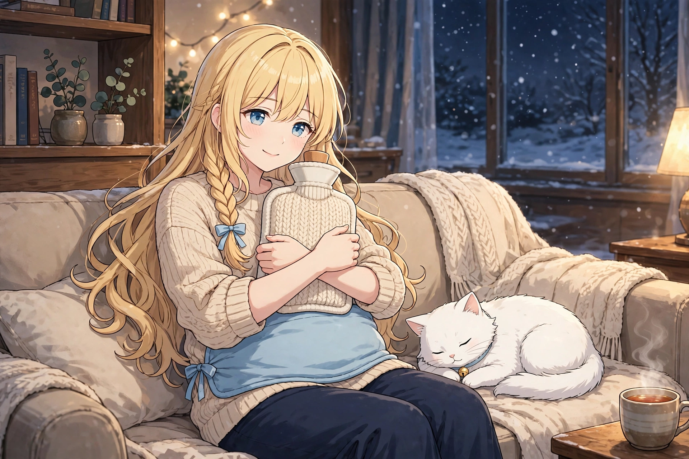

お腹の冷え対策｜腹巻きとあったかインナーの選び方（40代）

セラフィナ：先に結論です。お腹の冷え対策は「薄手で服に響かないこと」「締め付けないこと」「シルクや吸湿発熱など素材で選ぶこと」の3点です。この記事の商品は、この3点に合うものだけを先に並べます。
この記事の商品（先に比較）
| 商品 | 価格（税込） | お店 |
|---|---|---|
| 腹巻き レディース 薄手 素肌感覚 シルク in コットン | 1,386円 | はらまき屋さん。腹巻専門のお店 |
| 腹巻 レディース 吸湿発熱 あったかインナー STYLE | 1,188円 | SHIROHATO（白鳩） |
| 腹巻き ミッシーリスト シルク腹巻 冬用 レディース | 1,870円 | ミッシーリスト公式ショップ |
目安1：薄手で服に響かない
腹巻きは毎日続けてこそ意味があります。厚いものは服の上から段差が見えて続きにくいので、まずは薄手から始めてください。
目安2：締め付けないサイズ
お腹を締めるためのものではありません。食後に苦しくないこと、跡がつかないことが目安です。姿勢の面でも、締め付けは呼吸を浅くします。
目安3：素材で選ぶ
シルク混は肌ざわりと保温のバランスがよく、吸湿発熱素材は汗を熱に変える仕組みです。就寝時の寝冷え対策には、ずりにくいロング丈も向きます。
あえて推さないもの
- 厚手で服に響くもの（続かなくなります）
- ゴムがきつくて跡がつくもの（締め付けは逆効果です）
- 化繊だけで蒸れるもの（汗冷えします）
この記事の目安に合う商品
特徴：日本製のシルク混と吸湿発熱の腹巻きに絞りました。価格は1,000円台から始められます。
PR：この記事のテーマに合う腹巻き・インナー（PR）


あわせて読みたい：インナー・冷え対策 種類別ガイド／セルフケア用品